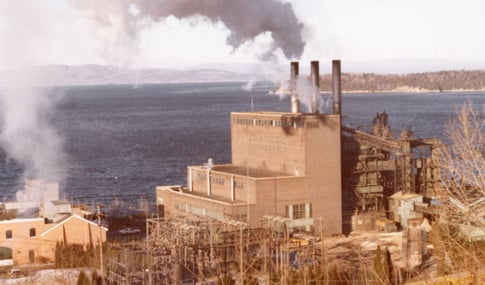
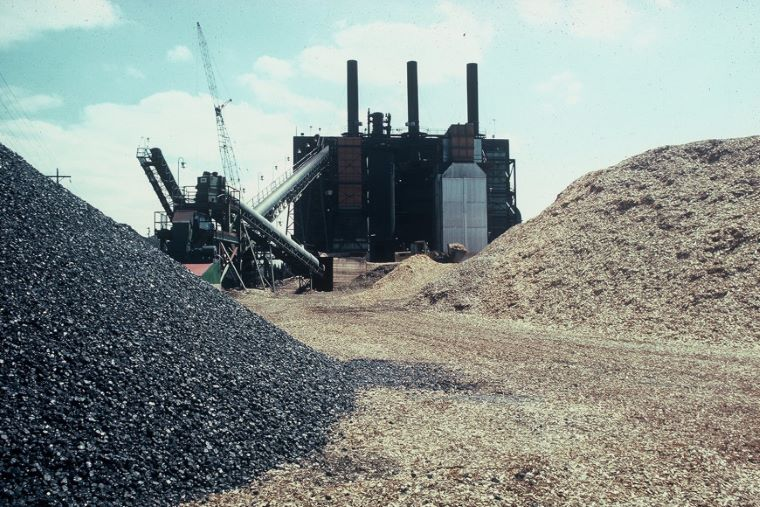
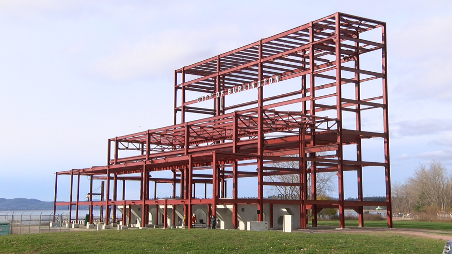

Adaptive Reuse of the Moran Frame
This is an architectural design project that explores building energy systems through speculative, adaptive reuse design of a decommissioned coal power plant in Burlington, VT.
What is the Moran Frame?
Site History and Context


 The Moran plant operated for over 3 decades until it was decommissioned in 1986. Following that it sat essentially vacant for another 30 years until in 2017 the city turned its attention to demolition. But instead of demolishing the entire building, they stripped away the brick facade leaving the structural steel frame. That brings us to its current conditions where it acts as part monolithic sculputure, part public park, but it only really gets used on the weekends in the summer. I argue the Moran Frame now needs an architectural intervention that reactivates the site year round andreveals its history for public reflection.
The Moran plant operated for over 3 decades until it was decommissioned in 1986. Following that it sat essentially vacant for another 30 years until in 2017 the city turned its attention to demolition. But instead of demolishing the entire building, they stripped away the brick facade leaving the structural steel frame. That brings us to its current conditions where it acts as part monolithic sculputure, part public park, but it only really gets used on the weekends in the summer. I argue the Moran Frame now needs an architectural intervention that reactivates the site year round andreveals its history for public reflection.

Moran Frame Existing Conditions
Theoretical Design Framework
Exploring Energy Systems
With the site's history of energy production and fuel conversion, it felt fitting to focus this project on investigating energy systems in buildings. There are the obvious systems of electricity, and heating, but there are systems of food production and distribution which is also a form of energy. Furthermore, there are also less tangible things such as the human activity and social energy that happen in a place. Finally I thought about the frame itself as a symbol of extractive, carbon intensive energy systems of the past.
Design Implementation
The biggest question I faced while working on this design was how I wanted to relate to the frame itself. The frame both represents dirty energy production, but also the very real and important industrial history of the site that I want to reveal with my design. I decided to tell a vertical story with my design where lower levels represent the history of the site by staying confined by the form of the frame and as you move up through the building that rigidity gradually dissolves into more complex and organic patterns. This of course represents the need to break free from carbon intensive energy production. I first expressed this idea visually through the concept drawings below.


This concept translated into the final design a series of tessellating panels on the facade. In addition to visually dissolving the frame, these panels surve a climate control function. Each one of these panels can pivot outwards as part of an automated shading system that helps control the temperature and lignting of the building. Depending on the temperature and the angle of the sun, these panels automatically rotate to either limit or invite solar gain into the building.


To avoid having the dense thermal mass of the frame poking through the envelope of the building, I decided to wrape the whole structure with a skin. This created a lot of volume for me to work with in my design process, but it also creates a lot of volume to heat in the winter. In addition to solar heating, the building will be climate controlled by a thermal heat network with the nearby McNeil biomass plant where excess low grade heat is pumped along the train tracks to the building. The McNeil generating station is what replaced the Moran plant when it got decommissioned, and it was designed a biomass plant in part because of the Moran plant's success conversion to wood chips fuel.
This connection between the Moran frame and the McNeil plant is something that I wanted to embrace and strengthen with my design. In addition to the thermal heat network, this connection will be strengthened through the food energy system.

 The McNeil generation station is located in an area of Burlington called the Intervale. This is collection of small local farms that is part of a vibrant local food economy in Burlington. There are many community gardens, a few places to get local agricultural products, however, every winter the farmer's market has to move locations to be hosted indoors by the Burlington Beer Company. Burlington lacks a centralized market hall space that can host the farmers market year round.
The McNeil generation station is located in an area of Burlington called the Intervale. This is collection of small local farms that is part of a vibrant local food economy in Burlington. There are many community gardens, a few places to get local agricultural products, however, every winter the farmer's market has to move locations to be hosted indoors by the Burlington Beer Company. Burlington lacks a centralized market hall space that can host the farmers market year round.
Filling this need became the main program of my building with a market hall covering the entire 2nd floor. To further integrate with the local food economy there will be a food production greenhouse on the 6th floor next to a more public botanical garden green house. In addition to connecting to the food energy system, market halls offer a unique way of connecting and being in community that often means they go beyond being an economic hub, but become social anchors in communities.
The rest of the program helps support the local goods market with personal craft studio spaces and studio classrooms on the upper levels. When coming up with the program I thought it was important to have a mix of a lot of different uses in the building so that there are more reasons for people to make a trip and go visit this place.
The ground floor is lacking a programmatic color, here, because I decided to leave it almost entirely unaltered. This ground floor is where I want to reveal some of the history of the site, if not with the actual detail, then with the mood evoked by the space. I left the floor plan completely open, positioning the original steel frame and concrete boiler housings as the center of attention. And to reach the atrium, you have to actually walk through one of the concrete boiler housings. This floor is supposed to feel raw and heavy, evoking the industrial past of the site. The main modification I put on this floor is the exposed mechanical parts of the start of the thermal heating network. In this way the heating energy system starts to interact with the symbolic frame energy system to create a more complex and complete experience. I tried to fit in as many of these moments as I could where multiple different energy systems combine and interact, because that for me is where the real complexity and interest lies.
Another example is with the north elevation. I didn't want to design windows for that wall because northerly windows are bad for insulation and energy efficiency. So where the limitations of the heating system left a blank wall, I thought I could fill that with another energy system. That north wall becomes the perfect canvas for hosting movie screening events. It is these moments of interaction and combination that is where I want this design to transcend being a single project and become more of a design philosophy. Because I argue that each individual energy system is understood enough and efficient enough as it is, but that the real work ahead of us lies in being clever with how these systems overlap, combine and create positive feedback loops with each other.